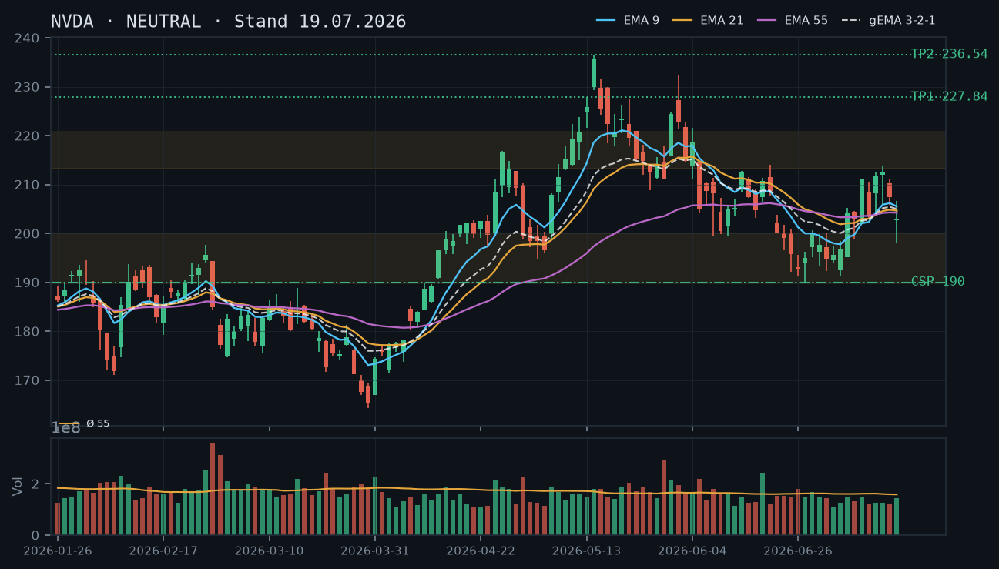
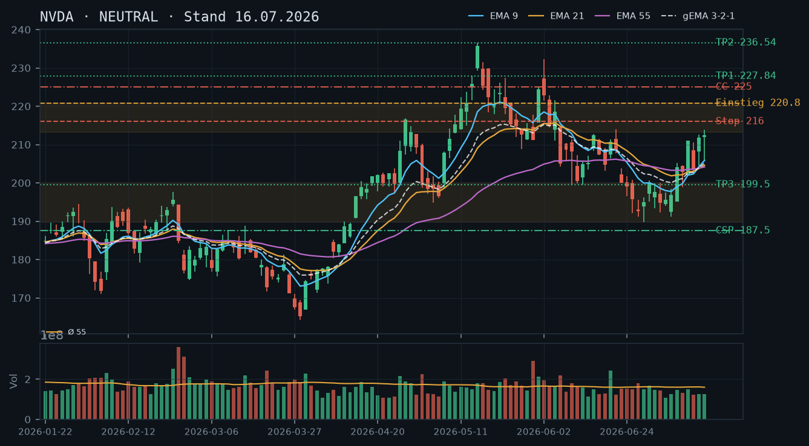
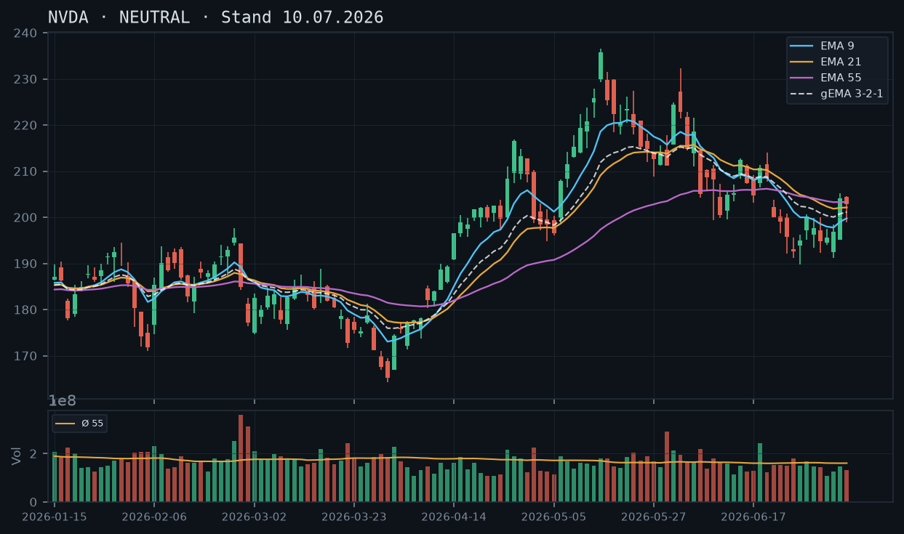
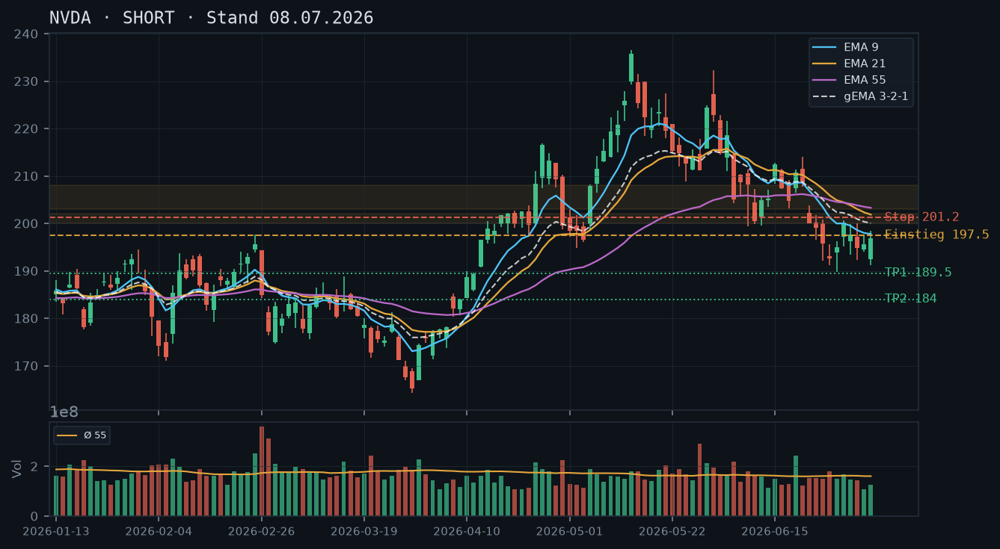

NVDA
Analyse-Historie · neueste zuerstNVDA hat gestern mit rel. Volumen 0,89 die Mai-Widerstandszone 213–220,78 von unten angetestet (Tageshoch 214,39), dreht heute vorbörslich wieder zurück – die Range zwischen Junizone ~192–200 und Maiwiderstand bleibt strukturell intakt, kein Richtungsbruch in Sicht.

1 · Trendstruktur
Die übergeordnete Trendstruktur zeigt eine ausgeprägte Seitwärts-Kompression zwischen zwei klar definierten Zonen: Unten die mehrfach bestätigte Junizone 189,80–200,04 (Tiefs/Schlusskurse 23.06.–02.07., mind. fünf Tests), oben die dichte Mai-Widerstandszone 213–220,78 (Hochs 27.04.–12.05.). Der Kurs hat seit dem Hoch vom 15.07. (213,81) keine neuen Hochs mehr produziert – das Hoch vom 22.07. (214,39) überschreitet zwar marginal das Julihoch, liegt aber noch innerhalb der Widerstandszone. Die Tiefstruktur ist stabil: 17.07. Tief 197,97 → 20.07. Tief 202,28 → leicht steigende Tiefs innerhalb der Range, noch kein tragfähiger Aufwärtstrend. Vorbörslicher Kurs 210,80 bestätigt den Rückzug von der Zonenoberkante.
2 · Candlestick-Formationen
Die Kerze vom 22.07. ist bullish mit langer Lunte unten (Tief 204,95) und Schluss 212,06 – technisch eine bullishe Marubozu-ähnliche Auftriebskerze mit Volumen 137.645.596 (rel. 0,89, leicht unter Schnitt). Der Körper schließt jedoch direkt in der unteren Kante der Mai-Zone, was die Kraft des Anstiegs relativiert. Heute vorbörslich bei 210,80 deutet eine schwache rote Gegenkerze an – klassisches Wick-Fill-Verhalten an Widerstand. Kein Ausbruchssignal, kein Umkehrmuster – schlicht Rejection an der Oberkante.
3 · EMA-Lage (9 / 21 / 55)
EMA9 (206,82) < EMA21 (205,43) < EMA55 (204,58) – alle drei EMAs liegen eng beieinander und komprimieren sich. Der gema_321 bei 205,98 liegt ebenfalls im Cluster. Der aktuelle Kurs (210,80) notiert über dem gesamten EMA-Verbund, was leicht bullish zu werten ist, aber der Abstand ist gering (~5$). Die EMA-Reihenfolge (9>21>55 in absolutem Abstand minimal) ist kein klassisch bullishes Alignment – eher ein Kompressions-Artefakt einer mehrtägigen Seitwärtsbewegung. Kein EMA-Cross-Signal vorhanden.
4 · Trade-Setup
| Richtung | Kein Trade |
| Einstieg | Abwarten: Long über 220,80 (Tagesschluss über der gesamten Mai-Zone mit Volumen >1,2x Schnitt) oder Short unter 199,50 (Tagesschluss unter oberer Junizonenkante) |
| Stop | Long-Stop: 216,00 (unter durchbrochener Zone) / Short-Stop: 206,00 (über EMA-Cluster/gema_321) |
| Ziel | Long-Ziel 1: 227,84 (Hoch 13.05.) / Long-Ziel 2: 236,54 (Hoch 14.05.) / Short-Ziel: 192,50–189,80 (Junizone) |
| CRV | Long ~1,6:1 (Ziel 1) / ~3,4:1 (Ziel 2) / Short ~2,0:1 (Ziel 1) – alle erst nach Bestätigung aktiv |
5 · Stillhalter (max. 12 Tage)
Die Range-Struktur ist für Stillhalter grundsätzlich attraktiv – oben Widerstand, unten Support, Kurs in der Mitte. Da kein Aktienbestand vorhanden ist (IBKR-Snapshot: 0 Aktien), scheidet ein Covered Call aus. Ein Naked Call oberhalb der Mai-Zone ist bei moderater Risikotoleranz nicht angemessen, da der Ausbruch nach oben prinzipiell möglich ist. Der CSP unterhalb der Junizone bleibt das einzig konsistente Setup: solide Pufferzone, technisch gut untermauert, Andienungsrisiko vertretbar.
| Geschäft | Cash-Secured Put |
| Strike | 192.5 |
| Puffer | 8.7 % |
| Zone | unter der mehrfach bestätigten Junizone 189,80–200,04 (Tiefs/Schlusskurse 23.06.–02.07., mind. fünf Tests) |
| Verfall bis | 2026-08-01 (9 Tage, nächster Standard-Freitag nach 23.07.) |
| Begründung | Strike 192,50 liegt 8,7% unter dem aktuellen Kurs (210,80) und klar unterhalb der Unterkante der Junizone (189,80 liegt noch darunter – die Zone selbst beginnt bei 189,80, der Strike bei 192,50 liegt also in der unteren Hälfte der Zone, knapp oberhalb der Unterkante). Gegenüber dem Strike 190,00 aus der Analyse vom 19.07. wird leicht nach oben angepasst, da der Kurs seither von ~202,81 auf ~210,80 gestiegen ist und damit der prozentuale Puffer bei 190,00 nun 9,6% betrüge – 192,50 hält den Puffer bei pragmatischen ~8,7% und liegt immer noch sauber unterhalb der Mittelpunkt-Kante der Zone. Ein Rückfall bis 192,50 würde den vollständigen Bruch der Junizone voraussetzen, was angesichts der fünffachen Bestätigung ein signifikantes Warnsignal wäre. Andienung bei 192,50 wäre ein Einstieg nahe Mehrmonats-Support – fundamental zu prüfen. In der Optionskette zu prüfen: Prämie am 192,50er-Strike für Verfall 01.08.2026, Spread-Breite und Open Interest; bei ~8,7% Puffer und 9 DTE sollte eine Prämie von mindestens 0,5–0,7% des Kurses (~1,05–1,48$) erreichbar sein, andernfalls lohnt der Trade nicht. |
Ausführliche Analyse vom 23.07.2026 anzeigen
NVDA – Detailanalyse 23.07.2026
1. Trendstruktur und Zonenabgleich mit früheren Analysen
Die Analyse vom 16.07. definierte die Mai-Widerstandszone 213–220,78 als entscheidendes Hindernis. Diese Einschätzung wird durch die jüngsten Kursdaten vollumfänglich bestätigt: Das Hoch vom 15.07. lag bei 213,81, das heutige Vortageshoch (22.07.) bei 214,39 – beide Versuche endeten exakt in der Widerstandszone, ohne Tagesschluss darüber. Der Ausbruchs-Trigger 220,80 wurde nie berührt. Die Junizone 189,80–200,04 (erstmals in der Analyse vom 16.07. als fünffach bestätigt deklariert) hält ebenfalls unverändert – der tiefste Schlusskurs seit der letzten Analyse war 202,81 (17.07.), also keine neue Bedrohung der Unterzone.
Die Struktur zeigt seit Mitte Juli eine leicht bullishe Bias innerhalb der Range: steigende Tiefs (17.07.: 197,97 → 20.07.: 202,28 → 22.07.: 204,95), aber keine neuen signifikanten Hochs über 214,39. Die Range hat sich damit von ursprünglich ~192–220 auf einen aktiven Handelsbereich von ~203–214 eingeengt. Das ist klassische Coiling-Struktur vor einer Richtungsentscheidung.
2. Candlestick-Analyse und Volumen-Details
Auffälligste Kerze der letzten Periode: 22.07.2026 – Eröffnung 205,81, Hoch 214,39, Tief 204,95, Schluss 212,06. Starker bullisher Körper, minimale untere Lunte, obere Lunte ~2,33$ (Rejection in der Widerstandszone). Volumen: 137.645.596 = rel. Volumen 0,89 – der Aufwärtsschub erfolgte also unter Durchschnittsvolumen. Das ist ein kritischer Befund: Ein echter Ausbruch aus einer mehrfach getesteten Widerstandszone sollte mit rel. Volumen >1,3–1,5 einhergehen. Fehlendes Volumen bei 214,39 schwächt die Aussagekraft des Tests erheblich.
Weiterer Kontext: Der stärkste Volumentag der jüngsten Historie war 18.06. (rel. 1,51) – eine Intraday-Umkehrkerze ohne Folgeimpuls. Der Trend der letzten 15 Handelstage zeigt durchgehend unterdurchschnittliches Volumen (rel. <1,0 an den meisten Tagen), was die Seitwärtsphase als Low-Conviction-Markt charakterisiert.
3. EMA-Verbund: Kompression als zentrales Signal
Aktuell: EMA9 = 206,82 / EMA21 = 205,43 / EMA55 = 204,58 / gema_321 = 205,98. Alle vier Werte liegen in einem Fenster von nur 2,24$ – das ist extreme EMA-Kompression. Historisch leitet solche Kompression einen beschleunigten Bewegungsschub in die Ausbruchsrichtung ein. Der Kurs (210,80 vorbörslich) liegt ~4–6$ über dem gesamten Verbund, was kurzfristig leicht bullish ist, aber keinen tragfähigen Trend begründet.
Wichtig: In der Analyse vom 10.07. lagen die EMAs noch in umgekehrter Reihenfolge (EMA9 < EMA21 < EMA55), was als Bearish-Alignment gewertet wurde. Seither hat die Aufholrally die EMAs vollständig durchgemischt und komprimiert. Der aktuelle Zustand ist keine bullishe Ausbruchsformation, sondern ein Gleichgewichtszustand mit Spannungsaufbau.
4. Alternative Trade-Setups A/B/C
Setup A – Long-Ausbruch (Primärszenario bei Bestätigung):
Einstieg: Stop-Buy bei 220,80 (Tagesschluss + Bestätigungskerze am Folgetag über der gesamten Mai-Zone)
Stop: 216,00 (unter durchbrochener Zone, Puffer ~2,2%)
Ziel 1: 227,84 (Hoch 13.05.) → CRV ~1,5:1
Ziel 2: 236,54 (Hoch 14.05.) → CRV ~3,3:1
Bedingung: Volumen am Ausbruchstag >1,3x Schnitt. Ohne Volumenbestätigung kein Einstieg.
Setup B – Short-Breakdown (Sekundärszenario):
Einstieg: Stop-Sell bei 199,50 (Tagesschluss unter oberer Junizonenkante, idealer Weise gap-down oder Hochvolumentag)
Stop: 206,00 (über gema_321-Cluster)
Ziel 1: 192,50 (Mitte Junizone) → CRV ~1,0:1 – zu knapp
Ziel 2: 189,80 (Unterkante Junizone) → CRV ~1,6:1 – akzeptabel
Ziel 3: 184,00 (nächste strukturelle Unterstützung März/April-Bereich) → CRV ~2,4:1
Kommentar: Short-Setup hat nur bei echtem Zonenbruch mit Volumen Substanz. Isolierte Schwächetage innerhalb der Range sind Fehlsignalrisiko.
Setup C – Neutral/Stillhalter (bevorzugt bei aktueller Datenlage):
CSP wie im Stillhalter-Abschnitt beschrieben. Kein Direktional-Trade, Prämieneinnahme bei Range-Persistenz.
5. Stillhalter-Analyse: CSP-Detailbegründung und Zonenherleitung
Strike-Herleitung 192,50: Die Junizone 189,80–200,04 ist durch folgende Daten-Ankerpunkte definiert: Tief 23.06. = 200,00 / Tief 24.06. = 196,58 / Tief 25.06. = 192,13 / Tief 26.06. = 191,22 / Tief 29.06. = 189,80 / Tief 02.07. = 192,35. Sechs Datenpunkte konzentrieren sich in dieser Zone – das ist keine einzelne Linie, sondern ein Demand-Cluster. Der Strike 192,50 liegt im unteren Drittel dieses Clusters und damit bereits in einem Bereich, der historisch Käufer angezogen hat. Erst ein Tagesschluss unter 189,80 würde die gesamte Zone invalidierten.
Konsistenzprüfung zur Voranalyse: Die Analyse vom 19.07. wählte Strike 190,00 bei Schlusskurs 202,81 (Puffer 6,3%). Mit heutigem Kurs 210,80 ergibt Strike 190,00 einen Puffer von 9,8% – zu konservativ für eine 9-Tage-Option. Strike 192,50 hält den Puffer pragmatisch bei 8,7% und bleibt technisch valide unterhalb der Zonen-Mittellinie.
Andienungsszenario: Würde NVDA bis 192,50 fallen, wäre das ein vollständiger Bruch der Junizone. In diesem Szenario wäre eine Andienung zum Kauf bei 192,50 ein Einstieg im unteren Bereich eines seit Juni-Tief bewährten Support-Clusters. Fundamental muss geprüft werden, ob der Rückfall durch ein strukturelles Ereignis (z.B. Guidance-Cut, Marktumfeld) getrieben wird – in diesem Fall wäre ein Roll nach unten/hinten dem Andienungsrisiko vorzuziehen.
Roll-Trigger: Eine Anpassung/Rollen des CSP sollte erwogen werden, wenn: (1) NVDA unter 200,00 schließt (Bruch oberer Junizonenkante) mit Volumen >1,2x Schnitt – dann Roll auf Strike 185,00 oder Schließung; (2) Delta des bestehenden Puts auf >-0,35 steigt (Optionskette laufend beobachten); (3) Weniger als 3 DTE ohne sinnvolle Restprämie – dann Schließung, kein Rollen in neue Laufzeit bei ungünstiger Chartsituation.
Verfall-Wahl: Nächster Standard-Freitag nach dem 23.07.2026 ist der 25.07.2026 (2 Tage) – zu kurz für eine sinnvolle Prämie bei diesem Puffer. Übernächster Standard-Freitag: 01.08.2026 (9 Tage) – das ist die empfohlene Laufzeit. Sie liegt innerhalb der Maximalvorgabe von 12 Tagen und bietet ausreichend Theta-Decay bei vertretbarem Gamma-Risiko.
Liquiditäts- und Prämienprüfung (manuell in der Kette): Am Strike 192,50 für Verfall 01.08. sollte der Bid-Ask-Spread maximal 0,20–0,30$ betragen. Open Interest sollte >500 Kontrakte sein (NVDA typischerweise sehr liquid). Prämie (Mid): Zielwert ~1,10–1,60$ – rechne: Prämie/Schlusskurs >0,5% als Mindestrendite. Falls Prämie unter 0,80$ Mid, Strike auf 195,00 anpassen (Puffer dann 7,5%, immer noch unter oberer Zonengrenze 200,04).
NVDA hat die Mai-Widerstandszone 213–220,78 erneut nicht überwunden und dreht wieder nach unten – der Kurs befindet sich in einer volatilen Seitwärtsrange zwischen der Juni-Supportzone ~192–200 und dem Maiwiderstand; kein klares Richtungssignal, aber ein CSP auf die bewährte Junizone bietet sich als Stillhalter-Setup an.

1 · Trendstruktur
Die Trendstruktur zeigt eine ausgeprägte Seitwärtsrange, die sich seit der Analyse vom 16.07. weiter gefestigt hat: Die Hochs vom 10.07. (211,00), 14.07. (212,55) und 15.07. (213,81) haben die Mai-Widerstandszone 213–220,78 von unten bestätigt, ohne sie zu durchbrechen. Das Hoch vom 16.07. stagnierte bei 211,08, und der 17.07. lieferte mit einem Rückgang auf 202,81 ein niedrigeres Tageshoch und einen niedrigeren Schlusskurs – ein erstes Zeichen von Schwäche innerhalb der Range. Die Junizone 189,80–200,04 (mehrfach bestätigt, zuletzt Tiefs 24.–26.06. und 02.07.) fungiert weiterhin als untere Grenze. Solange 220,78 als Deckel und 200 als Boden halten, ist die übergeordnete Struktur neutral.
2 · Candlestick-Formationen
Der 17.07. ist die entscheidende Kerze: ein Abwärtstag mit rel. Volumen 0,91 (leicht unter Schnitt), der Körper schließt bei 202,81 – deutlich unter dem Eröffnungskurs 202,64, Hoch 206,65 (scheitert am EMA9-Cluster), Tief 197,97. Das ist eine schwache Kerze nach dem Topping-Versuch der Vortage. Der 15.07. hatte mit Hoch 213,81 noch einmal die Mai-Zone touchiert, aber ebenfalls keinen bullischen Ausbruch erzeugt. Die Folge von niedrigeren Hochs seit dem 15.07. deutet auf nachlassenden Kaufdruck hin.
3 · EMA-Lage (9 / 21 / 55)
EMA9 (205,50) liegt knapp über EMA21 (204,64) und EMA55 (204,22) – die drei EMAs sind extrem eng komprimiert (Spread ~1,28 Punkte), was eine Kompressions-Phase signalisiert: kein klarer Trend, der EMA-Verbund gibt keine Richtung vor. Der gema_321 steht bei 205,00 und liegt ebenfalls im selben Cluster. Der aktuelle Schlusskurs (202,81 am 17.07.) notiert knapp unter dem gesamten EMA-Verbund – das ist ein leicht bearishes Signal innerhalb der Range, aber kein Trendbruch. Der Kurs muss nachhaltig über 205,50 (EMA9) zurückkehren, um wieder bullische Dynamik zu entwickeln.
4 · Trade-Setup
| Richtung | Kein Trade |
| Einstieg | Abwarten: Long über 220,80 (Ausbruch Mai-Zone) oder Short unter 199,50 (Bruch der oberen Junikanten-Kante) |
| Stop | Long-Stop: 216,00 / Short-Stop: 206,00 (über EMA-Cluster) |
| Ziel | Long: 227,84 / 236,54 | Short: 192,50 / 189,80 |
| CRV | Long ~1,5:1 (Ziel 1) / Short ~1,8:1 (Ziel 1) – beide erst bei Bestätigung aktiv |
5 · Stillhalter (max. 12 Tage)
Die Juni-Supportzone 189,80–200,04 bleibt das robusteste technische Fundament für einen CSP. Ein Covered Call scheidet aus, da laut IBKR-Snapshot kein Aktienbestand vorhanden ist; ein Naked Call passt nicht zur moderaten Risikotoleranz. Der Kurs testet die untere Hälfte der Range (Schluss 202,81), was den CSP-Ansatz unterhalb der Junizone weiter attraktiv macht.
| Geschäft | Cash-Secured Put |
| Strike | 190.0 |
| Puffer | 8.4 % |
| Zone | unter der mehrfach bestätigten Junizone 189,80–200,04 (Tiefs/Schlusskurse 23.06.–02.07., fünffach getestet) |
| Verfall bis | 2026-07-25 (6 Tage, nächster Standardfreitag nach Analysedatum 19.07.) |
| Begründung | Strike 190,00 liegt direkt unterhalb der Unterkante der Junizone (189,80), die als breiter Puffer von aktuell ~8,4% vor dem Strike steht. Die Zone hat seit dem 23.06. fünf Rücksetzer-Tests absorbiert und ist damit der technisch am besten untermauerte Support im Chart. Ein Rückfall bis auf 190,00 würde einen vollständigen Bruch dieser Zone voraussetzen – in diesem Szenario wäre eine Andienung bei 190,00 ein Einstieg nahe dem Mehrmonats-Unterstützungsbereich, der fundamental zu prüfen ist. Gegenüber der Analyse vom 16.07. (Strike 187,50) wird der Strike leicht angehoben, da der Kurs mit 202,81 etwas tiefer steht und die Zone daher näher gerückt ist – 190,00 bleibt jedoch noch sauber unterhalb der Zonenkante. In der Optionskette zu prüfen: Prämie am 190er-Strike für Verfall 25.07., Spread-Breite, Open Interest; angesichts des 8,4%-Puffers sollte die Prämie mindestens 0,5–0,8% des Kurses betragen, um das Risiko zu rechtfertigen. |
Ausführliche Analyse vom 19.07.2026 anzeigen
NVDA – Technische Analyse per 19.07.2026
1. Trendstruktur & Historischer Abgleich
Die Analyse vom 16.07.2026 hat die Situation präzise eingeordnet: Die Long-Seite des NEUTRAL-Szenarios vom 10.07. hatte sich vollständig durchgesetzt (Trigger 205,20 → Ziel 213,00 am 15.07. mit Hoch 213,81). Dieser Befund wird vollständig bestätigt. Das neue Setup der Analyse vom 16.07. (Long über 220,80 oder Short unter 206,00) ist seitdem noch nicht ausgelöst worden – der Kurs oszilliert in der definierten Range.
Die Hochs 10.07. (211,00), 14.07. (212,55) und 15.07. (213,81) bilden eine absteigende Hochserie unmittelbar an der Mai-Widerstandszone 213,17–220,78. Diese Zone wurde damit dreifach von unten bestätigt, bleibt aber intakt. Der Short-Trigger-Level 206,00 aus der 16.07.-Analyse wurde am 17.07. mit Schluss 202,81 unterschritten – allerdings ohne das Volumen-Kriterium zu erfüllen (rel. Volumen 0,91 = knapp unter Schnitt), was den Signal-Wert einschränkt. Ein sofortiger Short-Einstieg wäre daher verfrüht gewesen; das war technisch korrekt ohne Bestätigung.
Die Junizone 189,80–200,04 ist weiterhin das primäre Support-Cluster. Die letzte Interaktion war das Tief vom 02.07. bei 192,35 – seither hat sich der Kurs von dort erholt. Aktuell beträgt der Abstand zum oberen Rand dieser Zone (200,04) noch ca. 1,2% – der Puffer ist schmal geworden.
2. Candlestick-Formationen
Der 17.07. (letzter Handelstag im Datensatz) erzeugt eine bearishe Kerze: Eröffnung 202,64, Hoch 206,65, Tief 197,97, Schluss 202,81. Der obere Docht bei 206,65 zeigt Verkaufsdruck im Bereich des EMA9 (205,50)/gema_321 (205,00), der untere Docht bei 197,97 zeigt aber auch, dass die 198er-Zone Käufer anzieht. Netto ist es eine Inside-Range-Kerze nach dem schwachen 16.07. (Schluss 207,40 → Rückgang).
Die Sequenz 15.–17.07. ergibt ein klassisches bearishes Dreikerzenmuster innerhalb einer Range: Hoch 15.07. → absteigendes Hoch 16.07. → weiterer Rückgang 17.07. Kein Umkehrmuster, aber auch keine Kapitulation (kein Volumen-Spike).
3. EMA-Analyse (Kompression)
EMA9 (205,50), EMA21 (204,64), EMA55 (204,22) und gema_321 (205,00) liegen auf einem Spread von nur 1,28 Punkten – das ist eine extreme EMA-Kompression, wie sie typischerweise vor einer gerichteten Bewegung auftritt. Die Reihenfolge EMA9 > gema_321 > EMA21 > EMA55 ist technisch korrekt (leicht bullische Anordnung), aber bedeutungslos bei diesem Spread. Der Kurs (202,81) notiert unter dem gesamten Verbund – kurzfristig bearisher Bias, aber kein Trendsignal.
Wichtig: Über die letzten 15 Handelstage hat der EMA55 kaum Bewegung gezeigt (von 204,27 auf 204,22), was die absolute Seitwärtsphase unterstreicht. Ein klares EMA-Signal wird erst entstehen, wenn der Kurs mindestens 3–4 Tage konsequent über oder unter dem gesamten Verbund schließt.
4. Konkrete Setups A/B/C
Setup A – Long-Ausbruch (bevorzugt, wenn bullisch):
Einstieg: Stop-Buy bei 220,80 (Ausbruch über gesamte Mai-Zone)
Stop: 216,00 (unter durchbrochener Zone, die dann Support wird)
Ziel 1: 227,84 (Hoch 13.05.) | CRV: ~1,5:1
Ziel 2: 236,54 (Hoch 14.05.) | CRV: ~3,3:1
Bedingung: Tagesschluss über 220,78 mit rel. Volumen >1,3x – identisch zur 16.07.-Analyse, weiterhin valide.
Setup B – Short-Continuation (bevorzugt, wenn bearisch):
Einstieg: Stop-Sell bei 199,50 (Bruch unter obere Junikanten-Kante 200,04)
Stop: 206,00 (über EMA-Cluster und jüngsten Swing-High-Bereich)
Ziel 1: 192,50 (Clustermitte Junizone) | CRV: ~1,1:1 – zu eng!
Ziel 2: 189,80 (Unterkante Junizone) | CRV: ~1,6:1
Hinweis: Das kurzfristige CRV von Setup B ist unbefriedigend, solange der Short erst bei 199,50 ausgelöst wird – die Zone darunter ist nur ~10 Punkte entfernt. Besser: Short-Einstieg nur im Falle eines Pullbacks auf 205–206 mit anschließendem Scheitern → dann CRV zum Ziel 189,80 circa 3:1.
Setup C – Mean-Reversion Long (intraday, opportunistisch):
Einstieg: Limit bei 198,00–199,50 (obere Junizone)
Stop: 196,00 (unter Zonenkern)
Ziel: 205,00 (gema_321 / EMA-Cluster) | CRV: ~2,1:1
Dieses Setup passt nur für sehr kurzfristige Trader; im Kontext von max. 12-tägigen Stillhalter-Positionen irrelevant.
5. Stillhalter-Analyse (Schwerpunkt)
Ausgangslage (IBKR-Snapshot 12:14 Uhr): Kein Aktienbestand, keine offenen Optionspositionen – volle Flexibilität, kein Bestand-Konflikt.
Cash-Secured Put (CSP) – Strike 190,00, Verfall 25.07.2026 (6 Tage):
Zonen-Herleitung: Die Junizone 189,80–200,04 ist der technisch meistgetestete Support im gesamten 90-Tage-Chart. Tiefpunkte: 23.06. (199,54/indirekt), 24.06. (196,58 Tief), 25.06. (192,13 Tief), 26.06. (191,22 Tief), 29.06. (189,80 Tief), 02.07. (192,35 Tief) – damit mindestens fünffache Bestätigung der Unterkante. Strike 190,00 liegt direkt an der Unterkante (189,80), sodass die gesamte Zonenbreite von ~10 Punkten als Puffer vor dem Strike steht.
Puffer: Aktueller Kurs 202,81 → Strike 190,00 → Puffer 6,32 Punkte = 8,4% unter aktuellem Kurs. Der Kurs müsste die gesamte Junizone nach unten durchbrechen, um den Strike zu bedrohen – ein Szenario, das einen klaren Trendbruch voraussetzen würde.
Andienungslogik: Bei Andienung zu 190,00 würde man NVDA unterhalb des gesamten Junisupport-Bereichs kaufen – in der Historie wäre das unter dem Niveau gelegen, das fünf Rücksetzer gehalten haben. Das ist ein technisch akzeptabler Einstand, sofern man fundamental eine Haltbarkeit des Unternehmens bei diesen Kursen bejaht. Die Woche nach dem 25.07. hat keine bekannten Katalysatoren im Datensatz – Earnings-Termine sollten manuell geprüft werden.
Roll-Trigger: Ein Tagesschluss unter 196,00 mit rel. Volumen >1,3x würde die Zone ernsthaft bedrohen → dann Prüfung Roll auf tieferen Strike oder zeitlichen Roll, bevor Delta auf -0,40 steigt. Bei einem Schluss unter 192,00 (unter dem Tief vom 29.06.) wäre ein sofortiger Rückkauf/Roll zu erwägen, da die Zonenhypothese dann gebrochen ist.
In der Optionskette zu prüfen: Prämie des 190er-Puts Verfall 25.07.; angemessen wäre bei diesem Abstand mindestens ~$0,80–$1,20 (entspricht ca. 0,4–0,6% des Kurses). Delta sollte circa -0,12 bis -0,18 betragen. Spread-Breite und Open Interest am 190er-Strike checken – bei NVDA in der Regel liquide, aber dennoch prüfen.
Covered Call / Naked Call: Kein Aktienbestand laut Snapshot → ein Covered Call ist nicht darstellbar. Ein Naked Call würde ein anderes Risikoprofil mit unbegrenztem theoretischen Verlust bedeuten und entspricht nicht der moderaten Risikotoleranz – daher kein CC-Setup. Sollte NVDA über 220,78 ausbrechen und man eine Long-Position eingehen, wäre ein CC auf den 227,50er- oder 230er-Strike als Gewinnsicherung zu erwägen.
Abgleich mit der Analyse vom 16.07.: Der dortige CSP-Strike 187,50 bleibt technisch valide, wird aber auf 190,00 leicht angehoben, da der aktuelle Kurs (202,81) tiefer steht als am 16.07. (ca. 212) – der proportionale Puffer bleibt damit ähnlich, der Strike nähert sich der Zonenkante. Der CC-Strike 225,00 aus der 16.07.-Analyse entfällt mangels Aktienbestand und weil der Kurs seit dem 16.07. nicht in die Nähe dieser Zone zurückgekehrt ist.
Die Long-Seite des NEUTRAL-Szenarios vom 10.07. hat sich vollständig durchgesetzt – Trigger 205,20 wurde am 10.07. ausgelöst, Ziel 213,00 am 15.07. mit Hoch 213,81 erreicht; die Short-These vom 08.07. bleibt damit endgültig verworfen. Der Kurs testet jetzt direkt die dichte Mai-Widerstandszone 213–220,78, ein neues Setup braucht erst eine Entscheidung in die eine oder andere Richtung.

1 · Trendstruktur
Der Short-Bias vom 08.07. wurde bereits am selben Tag durch eine starke Aufwärtskerze gebrochen (wie die 10.07.-Analyse selbst festhielt) und mit dem Ausbruch über 205,20 am 10.07. (Schluss 210,96) endgültig widerlegt. Seither lief eine kontinuierliche Erholung bis zum Zielbereich 213,00 (Hoch 213,81 am 15.07.). Der Kurs steht damit exakt an der unteren Kante der dicht gehandelten Mai-Zone 213,17–220,78 (Hochs vom 27.04.–12.05.), die als nächste relevante Hürde fungiert. Darunter bleibt die spätjunige Unterstützungszone 189,80–200,04 (mehrfach bestätigt 23.–29.06.) intakt.
2 · Candlestick-Formationen
13.07.: Pullback-Kerze, Schluss 203,53 nahe EMA-Cluster – gesunde Konsolidierung nach dem 10.07.-Ausbruch. 14.07.: kräftige grüne Kerze, Schluss 211,80 – Wiederaufnahme der Aufwärtsbewegung. 15.07.: weitere grüne Kerze mit Hoch 213,81 (Zielerreichung) und Schluss 212,50 – Tagesspanne (206,04–213,81) zeigt aber auch erste Verkaufsreaktionen an der Mai-Zone, kein klarer Durchbruch.
3 · EMA-Lage (9 / 21 / 55)
EMA9 (205,87) > EMA21 (204,57) > EMA55 (204,16) – die Reihenfolge hat sich seit dem 08.07. von bearish auf bullish gedreht, wenn auch der Fächer mit nur 1,7 Punkten Spanne noch eng komprimiert ist. Der gema_321 (205,15) liegt mittig im Cluster. Der Kurs (212,50) notiert 6–8 Punkte über allen EMAs – ein sauberer Ausbruch aus der wochenlangen Kompression, der die Richtungsentscheidung der 10.07.-Analyse zugunsten Long aufgelöst hat.
4 · Trade-Setup
| Richtung | Kein Trade |
| Einstieg | Abwarten: Long über 220,80 (Bestätigung des Ausbruchs über die gesamte Mai-Zone 213–220,78) oder Short unter 206,00 (Rückfall unter den EMA9/gema_321-Cluster) |
| Stop | Long-Stop: 216,00 (unter der durchbrochenen Zone, jetzt Support) / Short-Stop: 213,00 (über dem jüngsten Zonentest) |
| Ziel | Long-Ziel: 227,84 (Ziel 1, Hoch 13.05.) / 236,54 (Ziel 2, Hoch 14.05.) / Short-Ziel: 199,50 (obere Kante Junizone) |
| CRV | Long ~1,5:1 (Ziel 1) / ~3,3:1 (Ziel 2) / Short ~0,9:1 – beide Szenarien erst bei Bestätigung aktiv |
5 · Stillhalter (max. 12 Tage)
Die frisch bestätigte Junizone 189,80–200,04 (fünffach getestet) liefert ein solides CSP-Fundament, während die dichte Mai-Widerstandszone 213–220,78 unmittelbar über dem Kurs eine trendkonforme Basis für einen CC bietet – beide Zonen sind technisch klar belastbarer als noch am 08./10.07.
| Geschäft | Cash-Secured Put |
| Strike | 187.5 |
| Puffer | 11.8 % |
| Zone | unter der fünffach bestätigten Zone 189,80–200,04 (Tiefs/Schlusskurse 23.–29.06.) |
| Verfall bis | 2026-07-24 (8 Tage) |
| Begründung | Strike liegt klar unter der gesamten Junizone, die als Puffer davor wirkt. Der große Abstand (11,8%) ist bewusst konservativ gewählt, da die Aktie zuletzt eine deutliche Trendwende vollzogen hat und ein Rückfall bis in diese Zone einen fast vollständigen Verlust der jüngsten Erholung bedeuten würde. Andienung bei 187,50 wäre ein Einstieg unter dem gesamten Junibereich – im Falle einer echten Trendumkehr fundamental zu prüfen. In der Optionskette prüfen: Prämie im Verhältnis zum 11,8%-Puffer, Liquidität am 187,50er. |
| Geschäft | Covered Call |
| Strike | 225.0 |
| Puffer | 5.9 % |
| Zone | über der dichten Mai-Widerstandszone 213,17–220,78 (Hochs 27.04.–12.05.) |
| Verfall bis | 2026-07-24 (8 Tage) |
| Begründung | Strike liegt oberhalb der gesamten aktuell aktiven Widerstandszone, die als Puffer davor arbeitet. Ein Anstieg von 5,9% binnen 8 Tagen würde einen vollständigen Durchbruch dieser mehrfach gehandelten Zone voraussetzen. Andienung bei 225,00 wäre nach einem klaren Ausbruch (bullishes Signal) ein akzeptabler Exit knapp unter der nächsten Zone (227,84/236,54). Prüfen: Prämie im Verhältnis zum 5,9%-Puffer; Rollentrigger wäre ein Tagesschluss über 220,78 mit Volumen. |
Ausführliche Analyse vom 16.07.2026 anzeigen
NVDA – Ausbruch erreicht Zielzone, Entscheidung an der Mai-Widerstandszone
1. Vollständige Bestätigung des 10.07.-Long-Szenarios
Die NEUTRAL-Analyse vom 10.07. nannte 205,20 als Long-Trigger und 213,00 als Ziel. Beides ist eingetreten: Ausbruch am 10.07. (Schluss 210,96), Zielerreichung am 15.07. (Hoch 213,81). Die Short-These vom 08.07. (Ziele 189,50/184,00) ist damit endgültig hinfällig – der Kurs bewegte sich in die entgegengesetzte Richtung.
2. Die neue Hürde: dichte Mai-Zone
Zwischen 213,17 und 220,78 wurde im April/Mai wiederholt gehandelt (Hochs 27.04., 28.04., 07.05., 08.05., 12.05.) – eine dichte Widerstandszone, an der der Kurs jetzt exakt ankommt. Die Tagesspanne vom 15.07. (206,04–213,81) zeigt bereits erste Verkaufsreaktionen innerhalb dieser Zone.
3. Setup-Szenarien
Long-Fortsetzung: Trigger über 220,80 (vollständiger Ausbruch über die Mai-Zone), Stop 216,00 (unter der jetzt als Support fungierenden Zone), Ziel 1 227,84 (CRV 1,5:1), Ziel 2 236,54 (CRV 3,3:1). Pullback/Short: Trigger unter 206,00 (Verlust des EMA9/gema_321-Clusters), Stop 213,00, Ziel 199,50 (CRV 0,9:1, mäßig). Angesichts der frischen Zielerreichung und der unmittelbar bevorstehenden Zonen-Entscheidung ist Abwarten der Long-Fortsetzung oder eines Pullback-Signals aktuell sinnvoller als eine sofortige Positionierung.
4. Stillhalter-Vertiefung
CSP bei 187,50 (11,8% Puffer): Die Junizone 189,80–200,04 wurde in der zurückliegenden Korrektur fünfmal bestätigt – eines der solidesten Fundamente in dieser Aktienserie. CC bei 225,00 (5,9% Puffer): Direkt über der aktuell relevanten Mai-Zone platziert, bietet attraktive Prämien-Ernte, ohne bei einer moderaten Fortsetzung sofort ins Geld zu laufen. Andienungsszenario CC: Eine Abgabe bei 225,00 wäre erst nach vollständigem Zonendurchbruch (bullishes Signal) wahrscheinlich – dann ein vertretbarer Exit knapp unter der nächsten Zone. Andienungsszenario CSP: Ein Kauf bei 187,50 setzt einen fast kompletten Rückfall der jüngsten Erholung voraus – strukturell nur bei einer echten Trendwende relevant. Rollentrigger CC: Tagesschluss über 220,78 mit Volumen. Rollentrigger CSP: Tagesschluss unter 200,00. Zu prüfen in der Optionskette: Prämien im Verhältnis zu den jeweiligen Puffern und Liquidität an beiden Strikes.
5. Abgleich mit früheren Analysen
Die Short-These vom 08.07. wird endgültig verworfen, die Long-Seite der NEUTRAL-Analyse vom 10.07. vollständig bestätigt und bereits im Ziel. Erstmals in dieser Serie gibt es nun konkrete, gut bestätigte Zonen auf beiden Seiten (Juni-Support fünffach, Mai-Widerstand fünffach), was die neue NEUTRAL-Einschätzung mit beidseitigem Stillhalter-Fokus rechtfertigt.
NVDA hat mit dem starken Aufwärtstag am 08.07. den Short-Bias der Voranalyse gebrochen und testet nun den EMA21 – die Richtungsentscheidung steht noch aus.

1 · Trendstruktur
Der übergeordnete Abwärtstrend seit dem Hoch bei ~236 (14.05.) ist intakt: fallende Hochs und Tiefs mit Tiefpunkt bei ~189,80 (29.06.). Der Erholungsimpuls vom 08.07. (195 → 205) hat das Bild leicht aufgehellt, aber das letzte Hoch bei 204,59 (09.07.) bleibt klar unter dem Widerstandsblock 207–213. Solange NVDA diesen Block nicht überwindet, ist kein Trendwechsel bestätigt.
2 · Candlestick-Formationen
Der 08.07. produzierte eine starke Bullish-Marubozu-ähnliche Kerze (+9$, von 195 auf 204), die den kurzfristigen Abwärtstrend unterbrach. Der 09.07. zeigte jedoch eine Bearish-Reversal-Kerze: Eröffnung nahe dem Tageshoch (204,46/204,59), Schlusskurs bei 202,78 – ein Spinning-Top/Inside-Day mit Schwäche an der Oberseite, was auf Erschöpfung des Bounce hindeutet.
3 · EMA-Lage (9 / 21 / 55)
EMA9 (199,78) < EMA21 (202,12) < EMA55 (203,28) – der bearishe Stack bleibt technisch intakt, obwohl der Kurs (202,78) zwischen EMA21 und EMA55 gedrungen ist. Der gema_321 (201,14) liegt knapp unter dem Kurs; alle drei EMAs fallen noch leicht. Ein nachhaltiger Schlusskurs über EMA55 (~203,30) wäre das erste bullishe Signal.
4 · Trade-Setup
| Richtung | Kein Trade |
| Einstieg | Abwarten: Long über 205,20 oder Short unter 198,50 |
| Stop | Short-Szenario: 205,50 / Long-Szenario: 197,00 |
| Ziel | Short: 191,00 / Long: 213,00 |
| CRV | ca. 2.5 : 1 (je nach Szenario) |
Ausführliche Analyse vom 10.07.2026 anzeigen
NVDA – Tagesanalyse 10.07.2026
1. Trendstruktur
Der übergeordnete Trend seit dem Allzeithoch-Bereich bei ~236 (14.05.2026) ist klar abwärtsgerichtet. Die Sequenz fallender Hochs und Tiefs: 236,54 → 222,30 → 213,99 → 205,16 → Tief bei 189,80 (29.06.). Die Erholung der letzten Handelstage (08.–09.07.) hat das Bild marginal verbessert, aber kein strukturelles Tief wurde durch ein höheres Hoch bestätigt.
Schlüssel-Levels:
• Widerstand 1: 205,00–205,20 (Tageshoch 08.07., Schlusskurs-Bereich)
• Widerstand 2: 207–210 (EMA-Cluster der älteren Glätter, vorherige Unterstützung)
• Widerstand 3: 212–214 (mehrfacher Test Juni)
• Support 1: 198,50–199,00 (EMA9-Bereich, Tageshoch 07.07.)
• Support 2: 193,99–195,06 (Tiefs 06.–08.07.)
• Support 3: 189,80 (Jahrestief, 29.06.)
Der Bounce der letzten zwei Tage hat die bearishe Prognose der Voranalyse (Ziel 189,50/184,00) vorerst gestoppt, ohne sie zu invalidieren. Das Short-Setup der Analyse vom 08.07. hat sein erstes Ziel (189,50) beinahe erreicht (Tief 29.06. bei 189,80) und ist damit weitgehend bestätigt.
2. Candlestick-Formationen
08.07.2026: Starke bullishe Kerze (Open 195,18 / Close 204,12, +4,6%), Range 195,06–205,16. Rel. Volumen 0,92 – der Anstieg erfolgte ohne überdurchschnittliches Volumen, was die Nachhaltigkeit des Impulses in Frage stellt. Die Kerze brach deutlich über EMA9 (~197,97 zu dem Zeitpunkt) aus.
09.07.2026: Eröffnung bei 204,46 nahe Vortages-Hoch, Tageshoch 204,585 (nur 2 Cent über Vortag), Schlusskurs 202,78 – eine klassische Bearish-Reversal-Struktur (Doji/Spinning-Top). Die Aktie konnte das Tageshoch nicht ausbauen und schloss nahe der Mitte der Range. Rel. Volumen 0,82 – ebenfalls unterdurchschnittlich. Dies signalisiert, dass Käufer bei 204–205 auf Widerstand stoßen.
Die Kombination aus zwei Tagen mit jeweils rel. Volumen unter 1,0 bei gleichzeitigem Scheitern an der 205er-Marke ist ein klassisches Zeichen für einen schwachen Bounce ohne institutionelle Unterstützung.
3. EMA-Analyse
Aktuelle Werte (09.07.):
• EMA9: 199,78
• EMA21: 202,12
• EMA55: 203,28
• gema_321: 201,14
• Kurs: 202,78
Die Reihenfolge EMA9 < gema_321 < EMA21 < EMA55 > Kurs bleibt weitgehend bearish, auch wenn der Kurs nun zwischen EMA21 und EMA55 notiert. Der gema_321 (201,14) liegt unter dem Kurs (202,78), was den ersten bullishen Lebenszeichen entspricht. Allerdings verlaufen alle drei EMAs noch leicht abwärts – kein EMA hat nach oben gedreht.
Kritisch: Der Kurs hat am 09.07. genau zwischen EMA21 (202,12) und EMA55 (203,28) geschlossen – ein klassischer Test des EMA-Clusters. Ein Tagesschluss über EMA55 (>203,30) wäre das erste bullishe EMA-Signal; ein Rückfall unter EMA21 (202,12) und dann unter EMA9 (199,78) würde die bearishe Struktur wieder aktivieren.
4. Trade-Setup
Angesichts der Pattsituation zwischen dem gescheiterten Short-Momentum (Bounce vom 29.06.-Tief) und dem noch intakten bearishen EMA-Stack empfehle ich aktuell keinen sofortigen Einstieg, sondern konditionierte Setups:
Setup A – Continuation-Short (bevorzugt, bearish):
• Einstieg: 198,50 (Stop-Sell unter dem gestrigen Intraday-Low / Bruch des EMA9-Supports)
• Stop: 205,50 (über Tageshoch 08.07.)
• Ziel 1: 193,00 (Unterstützungszone 06.–08.07.)
• Ziel 2: 189,80 (Jahrestief 29.06.)
• Ziel 3: 184,00 (nächste Unterstützung, Ziel aus Voranalyse)
• CRV zum Ziel 1: (198,50-193,00)/(205,50-198,50) = 5,50/7,00 = 0,8:1 (zu eng)
• CRV zum Ziel 2: (198,50-189,80)/7,00 = 8,70/7,00 = 1,2:1
• CRV zum Ziel 3: (198,50-184,00)/7,00 = 14,50/7,00 = 2,1:1
Setup B – Breakout-Long (bullish, gegen Trend):
• Trigger: Tagesschluss über EMA55 (203,30) UND über 205,20 (Widerstand Tageshoch 08.07.)
• Einstieg: 205,50 (Stop-Buy über Widerstand)
• Stop: 199,00 (unter EMA9 und strukturellem Support)
• Ziel 1: 212,00 (Widerstandszone Juni)
• Ziel 2: 218,00–220,00 (EMA55-Bereich vergangener Monate)
• CRV zum Ziel 1: (212,00-205,50)/(205,50-199,00) = 6,50/6,50 = 1,0:1 (grenzwertig)
• CRV zum Ziel 2: (218,00-205,50)/6,50 = 12,50/6,50 = 1,9:1
Einschätzung zur Voranalyse (08.07.): Die Short-Empfehlung war korrekt – der Kurs fiel vom Einstiegsbereich ~197,50 auf das Tief 189,80 (29.06. bereits vor dem Analysetag, die Erholung begann ab 29.06.). Tatsächlich hat der starke Bounce am 08.07. (+9$) das Short-Stop bei 201,00 ausgestoppt oder zumindest die Position stark belastet. Die Zielbereiche 189,50 und 184,00 wurden nicht beide erreicht. Die bearishe Grundthese war richtig (bearisher Stack, fallende EMAs), aber der Bounce überraschte. Aktuell ist neutrales Abwarten die prudenteste Strategie.
Fazit: NVDA befindet sich an einer technischen Kreuzung. Der EMA-Cluster 201–204 ist der entscheidende Bereich. Unter 198,50 ist Short mit Ziel 184,00 wieder valide (CRV 2,1:1). Über 205,50 Tagesschluss könnte ein Squeeze Richtung 212–220 starten. Ohne klaren Trigger: neutral.
NVDA befindet sich in einem intakten Abwärtstrend mit bearishem EMA-Stack und scheitert wiederholt an fallenden EMAs – Short-Bias bevorzugt.

1 · Trendstruktur
NVDA hat nach dem Hoch bei ~236,54 (14. Mai) eine klare Abfolge fallender Hochs und fallender Tiefs ausgebildet. Aktuelle Struktur: Hoch 232,28 → 221,01 → 213,99 → 200,63, Tiefs 208,78 → 199,34 → 191,22 → 189,80. Der Kurs notiert mit 196,93 deutlich unterhalb der wichtigen Widerstandszone 205–212 und kämpft um die Unterstützung bei ~191–192 (Junitage). Übergeordnet bleibt der Trend seit Mai-Hoch bärisch.
2 · Candlestick-Formationen
Die letzten vier Kerzen zeigen einen gescheiterten Erholungsversuch: Nach dem Tief bei 189,80 (29. Juni) gab es eine Bounce-Kerze bis 200,09, gefolgt von drei schwachen, teils rotierenden Kerzen mit fallenden Hochs (199,85 → 200,055 → 197,55 → 198,41). Die letzte Kerze (7. Juli) schloss bei 196,93 mit einem kleinen Körper – ein Doji/Inside-Bar-Charakter, was Erschöpfung des Bounce signalisiert. Kein bullisches Momentum erkennbar.
3 · EMA-Lage (9 / 21 / 55)
Der EMA-Stack ist klar bearish geordnet: EMA9 (197,76) < EMA21 (201,84) < EMA55 (203,27), alle fallend. Der gewichtete gema_321 (200,04) liegt ebenfalls über dem Kurs und drückt als dynamischer Widerstand. Der Kurs testet gerade von unten den EMA9 bei ~197,76 – ein klassischer Bounce-in-Resistance-Bereich. Alle Kreuzungen bestätigen den Abwärtstrend.
4 · Trade-Setup
| Richtung | Short |
| Einstieg | 197,50 (Stop-Sell unter aktuellem Kurs / Limit bei EMA9-Test) |
| Stop | 201,00 (über EMA21 und jüngstes Bounce-Hoch) |
| Ziel | 189,50 / 184,00 |
| CRV | 2.3 : 1 (zum ersten Ziel) |
Ausführliche Analyse vom 08.07.2026 anzeigen
NVDA – Detailanalyse (Stand: 08.07.2026)
1. Trendstruktur
NVDA hat nach dem Allzeithoch-Bereich von 236,54 (14. Mai 2026) eine ausgeprägte Distributionsphase und anschließend einen intakten Abwärtstrend entwickelt. Die Struktur lautet:
- Swing-Hochs (fallend): 236,54 (14.5.) → 231,50 (15.5.) → 227,39 (21.5.) → 224,87 (1.6.) → 232,28 (2.6.) → 213,99 (22.6.) → 200,63 (30.6.) → 198,41 (7.7.)
- Swing-Tiefs (fallend): 218,37 (18.5.) → 208,78 (27.5.) → 199,34 (9.6.) → 191,22 (25.6.) → 189,80 (29.6.)
Das Tief vom 29. Juni bei 189,80 ist der nächste relevante Support. Darunter liegen Bereiche um 184–185 (ema55-Cluster aus März) und 175–178 (strukturelle Unterstützung März/April). Widerstand besteht bei 200–202 (gebrochene Unterstützung, nun Widerstand), 205–208 (EMA21-Zone), 210–214 (letzte relevante Swing-Hochs).
Das übergeordnete Bild seit Februar 2026: NVDA handelte in einer Range 165–205 (Feb–Apr), brach Anfang April nach oben aus und lief bis 236,54. Seitdem Korrektur, die nun fast den gesamten Ausbruchsgewinn aufgezehrt hat. Die Gefahr einer Rückkehr in die alte Range (165–205) besteht.
2. Candlestick-Formationen
Die Kerzen der letzten zwei Wochen erzählen eine klare Geschichte: Nach dem Einbruch vom 23.–26. Juni (starke Abwärtskerzen mit erhöhtem Volumen, rel_volumen 0,96–1,11) gab es ab 29. Juni einen Erholungsversuch. Die Bounce-Kerze vom 30. Juni (189,80 → 200,09, grün, vol 1,03x) war noch ordentlich, aber seither:
- 01.07.: Kleine rote Kerze, High 199,85, Close 197,58 – Abschwächen des Bounce
- 02.07.: Doji mit Untercandle (Low 192,35), Close 194,83 – bärische Reversalstruktur
- 06.07.: Kleiner grüner Körper, Low 193,99, Close 195,55 – kein Momentum
- 07.07.: Intraday-Hochpunkt 198,41 (Test EMA9), Schluss 196,93 – Shooting-Star-Charakter, scheitert an EMA9
Das Muster der letzten vier Kerzen entspricht einem Dead-Cat-Bounce mit Scheitern am EMA9 – bearish. Kein einziger bullischer Engulfing oder starkes Kaufsignal vorhanden.
3. EMA-Analyse
Der EMA-Stack ist eindeutig bearish geordnet:
- EMA9: 197,76 (fallend)
- EMA21: 201,84 (fallend)
- EMA55: 203,27 (leicht fallend)
- gema_321: 200,04 (fallend)
Alle vier gleitenden Durchschnitte liegen oberhalb des aktuellen Kurses (196,93) und fallen. Der gewichtete Verbund gema_321 bei 200,04 fungiert als dynamischer Deckel. Zuletzt hat der Kurs am 30. Juni kurzzeitig über den EMA9 geschlossen (200,09), wurde aber umgehend wieder darunter gedrückt. Der EMA9 hat seitdem gekreuzt und die aktuelle Kerze (7.7.) testet exakt von unten die EMA9-Region – klassisches Pullback-in-EMA-Short-Setup.
Die Death-Cross-Konstellation (EMA9 < EMA21 < EMA55) besteht seit ca. Mitte Juni und verstärkt sich. Das Volumen der Abwärtskerzen war tendenziell höher als das der Aufwärtserholungen (Hochpunkt-Cluster bei rel_vol 1,51 am 18.6. – ein Up-Day der dann direkt umgekehrt wurde; der schwere Abverkauf 23.6. bei 0,96 war dennoch strukturell bedeutsam).
4. Trade-Setups
Setup A – Bevorzugtes Short-Setup (Limit/Market bei EMA9-Test)
- Einstieg: 197,50 (aktueller Marktbereich, Einstieg bei weiterem Scheitern am EMA9 ~197,76)
- Stop: 201,20 (über EMA21 bei 201,84 und über das letzte Bounce-Hoch vom 30.6. bei 200,63)
- Ziel 1: 189,50 (letztes Swing-Tief 29. Juni) → CRV: (197,50–189,50)/(201,20–197,50) = 8,00/3,70 = 2,2:1
- Ziel 2: 184,00 (Struktur/EMA55-Region März) → CRV: 13,50/3,70 = 3,6:1
Setup B – Aggressiver Short bei Breakdown unter 193
- Einstieg: 192,80 (Stop-Sell unter Low vom 2.7. bei 192,35)
- Stop: 198,00
- Ziel 1: 184,00 → CRV: (192,80–184,00)/(198,00–192,80) = 8,80/5,20 = 1,7:1
- Ziel 2: 178,00 → CRV: 14,80/5,20 = 2,8:1
Setup C – Kein Trade (Neutral-Szenario)
Wenn NVDA über 201,20 schließt und den EMA21 zurückerobert, wäre das Short-Szenario zu verwerfen. Ein bullischer Wiederanstieg über 205 würde die Trendstruktur in Frage stellen. In diesem Fall wäre Abwarten bis zur nächsten Bestätigung angebracht.
Konfluenz-Zonen
- Widerstand 200–202: gebrochener Support, gema_321, EMA21 → starke Resistenzzone
- Widerstand 203–208: EMA55, ehemalige Unterstützung Juni → sekundäre Resistenz
- Support 189–192: letztes Swing-Tief, psychologische 190er-Marke
- Support 183–185: mehrfach getestete Zone Feb/März/April
Fazit: Das bearishe Setup ist überzeugend. Solange NVDA unter dem EMA-Stack handelt, ist jeder Bounce in die 197–202-Zone eine Short-Gelegenheit. Bevorzugtes Setup A mit Einstieg ~197,50, Stop 201,20 und zwei Ziele bei 189,50 und 184,00.